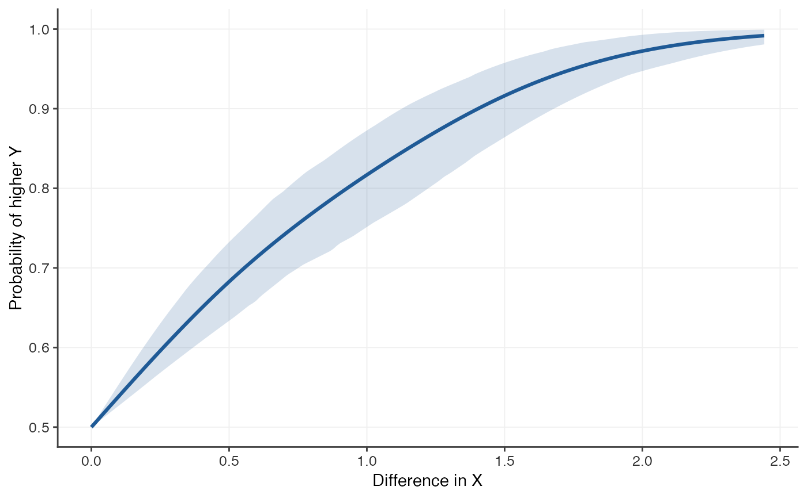
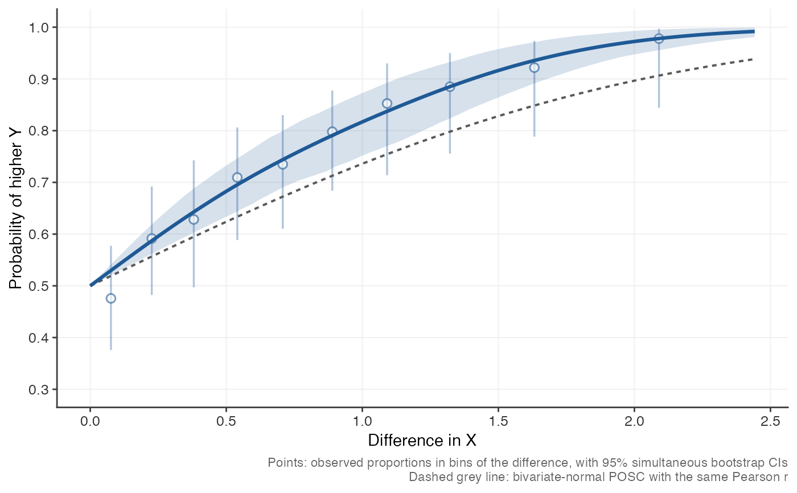

Estimates the probability of outcome superiority curve directly from predictor and outcome scores, without assuming bivariate normality, with a bootstrap confidence band.
Usage
posc_emp(
x,
y,
df = 3,
level = 0.95,
n_boot = 1000,
max_pairs = 20000,
max_delta = NULL,
bins = 10,
standardize = FALSE,
predictor_name = "X",
outcome_name = "Y"
)Arguments
- x, y
Numeric vectors of predictor and outcome scores. Pairs with a missing value in either are dropped.
- df
Degrees of freedom of the spline (1 to 10).
- level
Confidence level of the band.
- n_boot
Number of bootstrap resamples. At least 1000 is recommended for a 95 percent band; use 0 for no band.
- max_pairs
Maximum number of pairs used in each fit.
- max_delta
Largest difference in the predictor to evaluate. Defaults to the 95th percentile of the absolute pairwise differences.
- bins
Bins for the observed proportions: either the number of bins (default 10), which are formed to hold roughly equal numbers of pairs, or a vector of breakpoints for \(|\Delta|\) (in the units of the predictor, after standardizing if
standardize = TRUE). Use 0 orNULLfor no bins.- standardize
If
TRUE, the predictor is standardized first so that differences are in standard-deviation units.- predictor_name, outcome_name
Labels used in printed output and plots.
Value
An object of class "posc": a list with elements
- curve
data frame with columns
delta,p,lower,upper, over a symmetric grid of differences.- method, r, n, level, sd_x, max_delta, labels, details
information about how the curve was computed.
Details
Pairwise data. Every pair of people \((i, j)\) with
\(x_i \ne x_j\) contributes the difference \(\Delta_{ij} = x_i - x_j\)
and an indicator of whether the person with the higher predictor score
also has the higher outcome (ties in the outcome count as 1/2). For large
samples a random subset of max_pairs pairs is used.
Model. The curve is modelled as
$$\mathrm{logit}\, P(\Delta) = \mathrm{sign}(\Delta)\, g(|\Delta|),$$
where \(g\) is a natural cubic spline with df degrees of freedom and no
intercept, whose basis is zero at \(|\Delta| = 0\). This builds in the two
properties every POSC must have, \(P(0) = 0.5\) and
\(P(-\Delta) = 1 - P(\Delta)\), while leaving the shape free. The 0/1
responses are shrunk by 0.0005 towards 0.5 so that the fit exists even for
near-perfect relationships; this changes the curve by a negligible amount. Increase
df for a more flexible curve; df = 1 makes the logit of the curve
linear in \(\Delta\). Because a natural spline has zero curvature at its
boundary, the curve is smooth through \(\Delta = 0\). It is not forced to
be monotone.
Confidence band. Pairs that share a person are not independent, so
model-based standard errors from the pairwise regression would be far too
small. Instead, people are resampled with replacement n_boot times, the
curve is refitted to each resample (with the knots held fixed), and the
band is formed from pointwise percentiles of the bootstrap curves. Pairs
formed by a person and their own duplicate are excluded. Use
set.seed() beforehand for reproducible results.
Binned observed proportions. To check the fitted curve against the
data, the pairs with \(|\Delta| \le\) max_delta are grouped into bins
of \(|\Delta|\) and the observed proportion of pairs in which the person
higher on the predictor is also higher on the outcome is computed in each
bin. plot(fit, bins = TRUE) shows these as points with whiskers, and
posc_bins()
returns them as a table. The whiskers are simultaneous (family-wise)
confidence intervals: with probability level they cover all of the bin
proportions at once. They are computed from the same person-level
bootstrap as the curve, on the empirical-logit scale
\(\ell_k = \mathrm{logit}\{(n_k \hat p_k + 0.5)/(n_k + 1)\}\) for a bin
with \(n_k\) pairs: the interval is
\(\mathrm{logit}^{-1}(\ell_k \pm c\,\widehat{se}_k)\), where
\(\widehat{se}_k\) is the bootstrap standard error of \(\ell_k\) and
\(c\) is the level quantile of
\(\max_k |\ell^*_k - \ell_k| / \widehat{se}_k\) over the bootstrap
resamples (the max-\(t\) or sup-\(t\) method). The intervals are
therefore asymmetric and lie between 0 and 1.
Non-monotone relationships. A POSC averages over where in the predictor's distribution a pair of people sits. For a U-shaped relationship, the person higher on the predictor is more likely to have the higher outcome on one side of the minimum and less likely on the other, so the curve reflects the balance of the two. For a symmetric U centred on the middle of the predictor's distribution the true POSC is flat at 0.5, even though the predictor is strongly related to the outcome. The empirical curve is not constrained to be monotone and recovers such shapes; the dashed normal-theory reference, which depends only on the linear correlation, is not meaningful in that case.
See also
posc_uni() for the curve implied by bivariate normality, which
plot(fit, reference = TRUE) overlays as a dashed line.
Examples
set.seed(1)
x <- rnorm(120)
y <- exp(0.8 * x + rnorm(120, sd = 0.6)) # skewed, non-normal outcome
fit <- posc_emp(x, y, n_boot = 200) # use n_boot >= 1000 in practice
fit
#> Probability of Outcome Superiority Curve
#> Method: empirical (spline logistic, bootstrap CI)
#> Predictor: X Outcome: Y
#> r = 0.618 (Pearson), n = 120
#> Spline df = 3, pairs used = 7140, bootstrap resamples = 200
#>
#> P(higher Y | X higher by delta):
#> delta p lower upper
#> 0.441 0.663 0.619 0.711
#> 0.882 0.789 0.725 0.844
#> 1.763 0.951 0.915 0.982
plot(fit)

posc_bins(fit)
#> delta_low delta_high delta n_pairs p lower upper
#> 1 0.0000000 0.1518521 0.07622528 679 0.4756996 0.3760137 0.5774302
#> 2 0.1518521 0.3050298 0.22624334 678 0.5914454 0.4821749 0.6921316
#> 3 0.3050298 0.4574587 0.38062235 678 0.6283186 0.4972460 0.7425794
#> 4 0.4574587 0.6206429 0.54051079 678 0.7094395 0.5885122 0.8060455
#> 5 0.6206429 0.7950737 0.70750015 679 0.7349043 0.6102759 0.8302333
#> 6 0.7950737 0.9880430 0.88952408 678 0.7979351 0.6838202 0.8776170
#> 7 0.9880430 1.2004087 1.09102549 678 0.8525074 0.7139100 0.9299624
#> 8 1.2004087 1.4614854 1.32207878 678 0.8849558 0.7555483 0.9498317
#> 9 1.4614854 1.8222753 1.63233955 678 0.9218289 0.7883631 0.9734716
#> 10 1.8222753 2.4420696 2.09021785 679 0.9779087 0.8442007 0.9970605
plot(fit, bins = TRUE, reference = TRUE) # add data and normal curve
